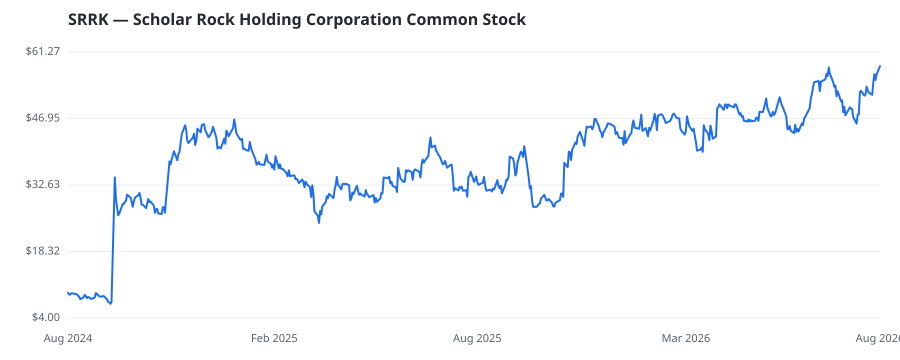

bullish · bearish · n/a — dots: price>SMA10 · SMA10>SMA50 · SMA50>SMA200 · up>down volume (20d)
Pharmaceuticals & Biotech · mid cap

Scholar Rock Holding Corp is a biopharmaceutical company focused on improving the lives of children and adults with Spinal Muscular Atrophy and other rare, severe, and debilitating neuromuscular diseases. Its pipeline candidates include apitegromab and a subcutaneous formulation of apitegromab. The clinical-stage pipeline also includes SRK-439, an investigational subcutaneously administered fully human anti-pro/latent myostatin antibody with high inhibitory potency and selectivity toward myostatin, being developed for the treatment of rare neuromuscular diseases. The company also maintains ear BIOLOGICAL PRODUCTS, (NO DIAGNOSTIC SUBSTANCES) · website
| Revenue | $0 | Net income | $-377.9M |
|---|---|---|---|
| Operating income | $-384.6M | Diluted EPS | $-3.29 |
| Assets | $404.3M | Equity | $245.5M |
This name produced 0.4% of the ranked funds’ total alpha.
| Fund | Fund alpha vs SPY | Position | % of book |
|---|---|---|---|
| Samsara BioCapital, LLC | +22% | $379M | 31.2% |
| Aisling Capital Management LP | +160% | $4M | 0.9% |
Hedge data: SEC EDGAR 13F · ranked funds beat SPY in >50% of their quarters · fund alpha = mirror-portfolio return minus SPY.